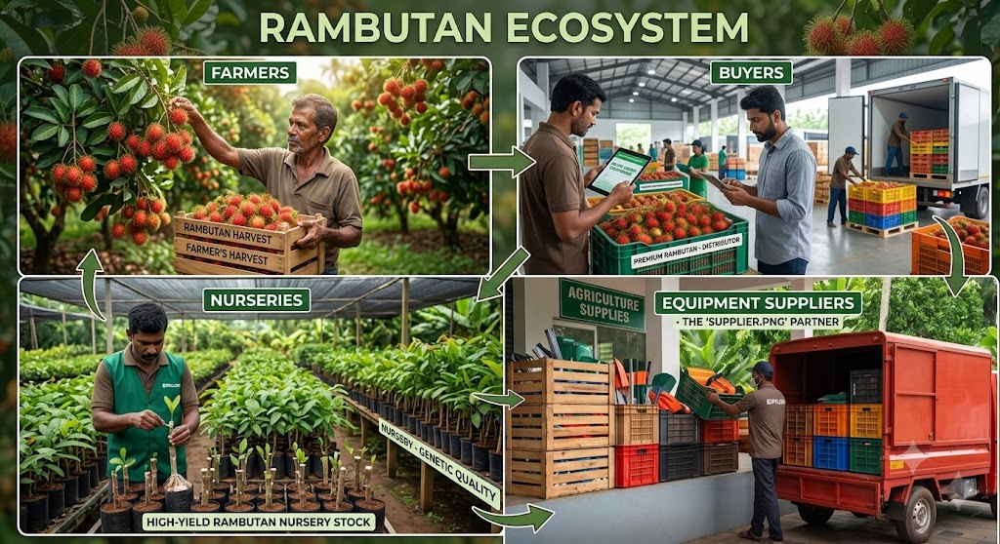

Founded with a vision to streamline the tropical fruit ecosystem, RambuConnect bridges the gap between regional Rambutan cultivators and commercial markets. We empower agricultural communities by providing data-driven trade opportunities, eliminating unnecessary layers, and supporting growers from sapling selection to final distribution.
RambuConnect is a web-based marketplace designed to connect farmers, buyers, nurseries, and agricultural input suppliers through a single digital platform. The project demonstrates how Python and MySQL can be used to build a complete web application without relying on frameworks.
About RambuConnect
Major Objectives
Project Architecture & Specifications